Perritos ya adoptados
Estos son algunos de los perritos que encontraron un hogar amoroso gracias a nuestras adopciones responsables. ¡Mira lo felices que están en sus nuevas familias!
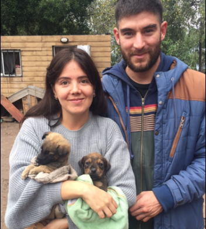
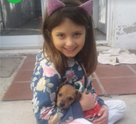
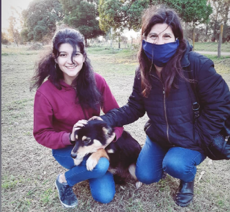
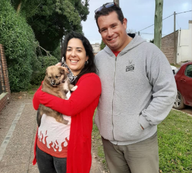
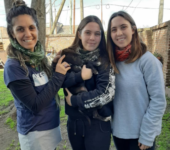
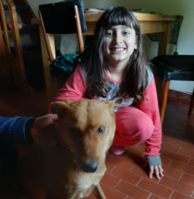
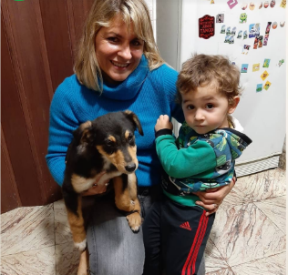
 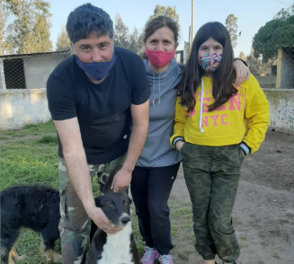
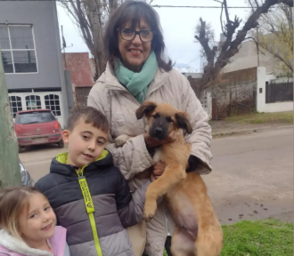
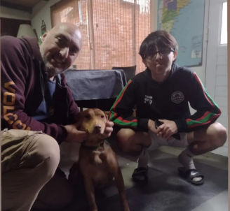
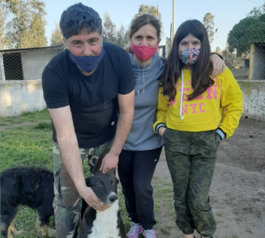
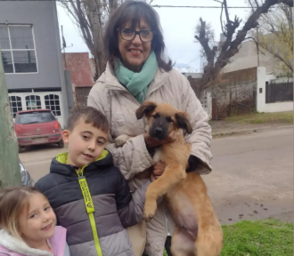
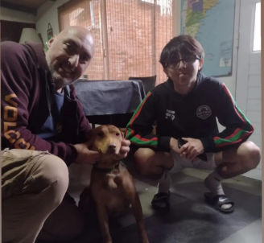
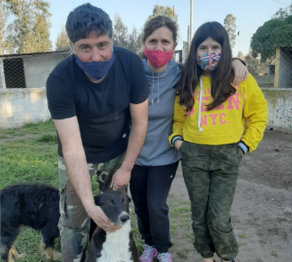
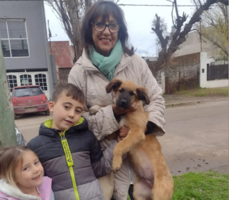
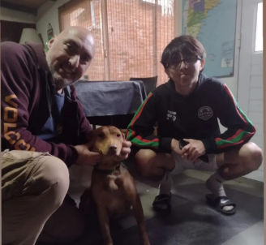